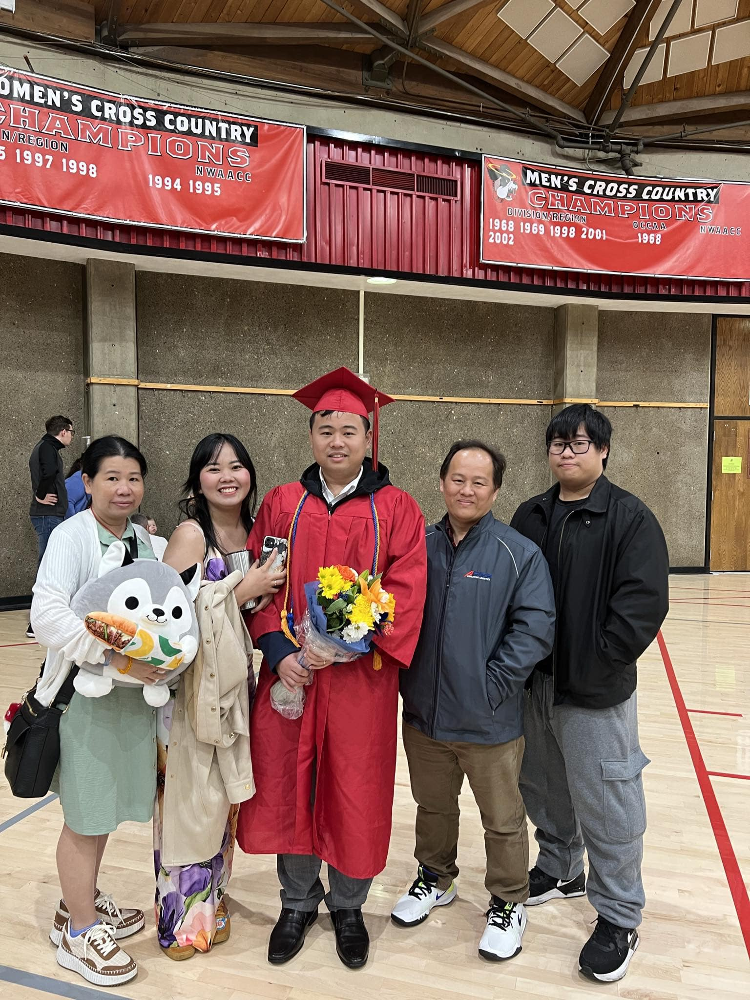
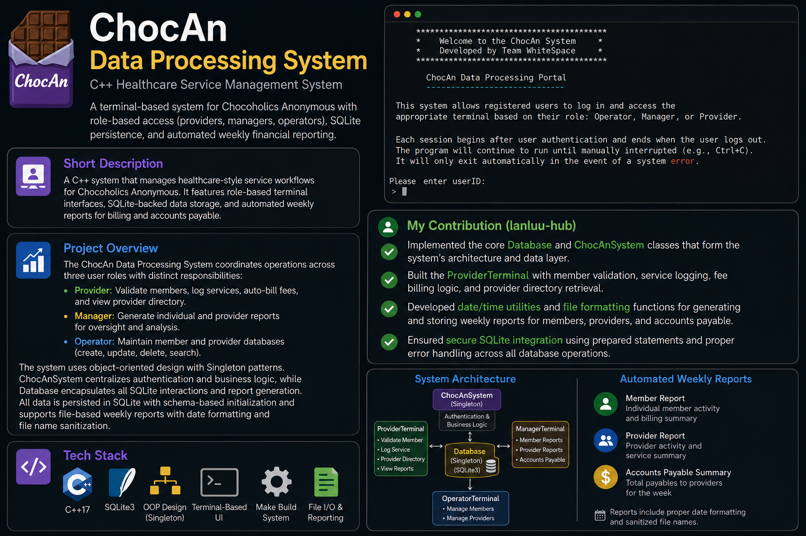
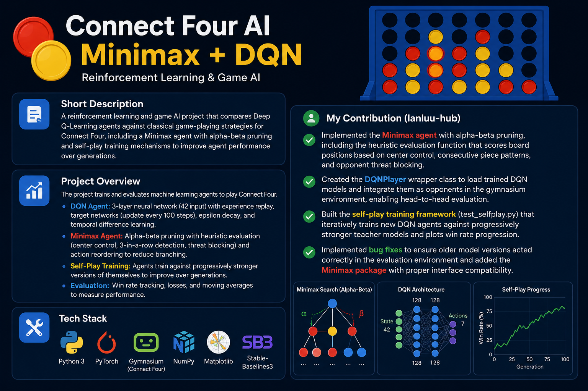
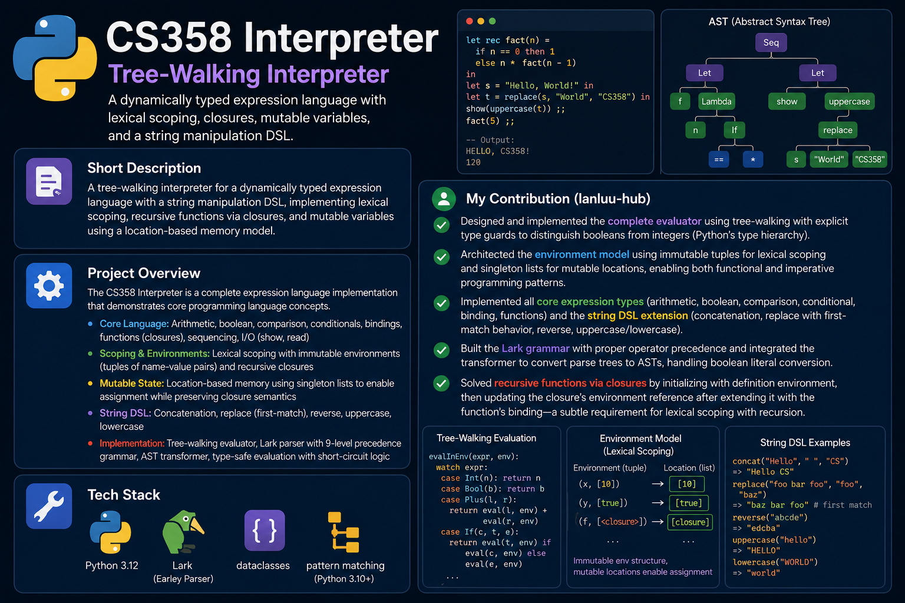

About me
I'm a Computer Science student at Portland State University focused on software engineering, web development, and systems programming. I build applications with a focus on clean architecture and maintainable code.
Before studying in the US, I represented Vietnam at WorldSkills ASEAN in IT Network Systems Administration, an experience that sharpened both my technical depth and ability to perform under pressure.
I'm currently seeking internships where I can contribute to real products while continuing to grow as a developer.
Experience
Analog Devices · Beaverton, OR · Jul 2024 – Present
Operating 11 tools across the fab as a Wafer Fab Operator II, fully certified on all Endura toolsets within the first two weeks of training, including Endura 8in, Endura CRO, and Endura Barrier.
Nominated as a backup lead within six months, recognized by leads and supervisors for consistently staying ahead of workload. Improved tool uptime by proactively preparing qualifications immediately after engineer maintenance jobs, reducing tool downtime. Collaborated directly with process engineers to expedite troubleshooting by applying prior semiconductor experience. Also informally mentored newer operators, helping them get up to speed faster.
Microchip Technology · Gresham, OR · Apr 2023 – Mar 2025
Worked as a Production Specialist in a semiconductor cleanroom environment, fully certified across 13 toolsets in my functional area including AMAT Endura Cu PVD, AMAT Endura Al / AlCu PVD, Novellus Sabre, Novellus Speed, Novellus Altus W CVD, TEL Alpha Furnace, HeatPulse RTP/RTA, Scrubber, and Duo SOG.
Recognized as Employee of the Month for attention to detail and consistently going the extra step to ensure quality and correct tool setup. The experience and certifications I built here carried directly into my next role at Analog Devices, where I was hired at Wafer Fab Operator II rather than starting at level I. Position ended due to company-wide layoffs in March 2025.
People's Army of Vietnam · Air Defense – Air Force · 2016 – 2018
Completed mandatory military service, finishing basic training with Battalion 11 of the 367th Division before serving two years in Division 367, Regiment 93, Battalion 123.
Served as a ZSU-23-4M gun operator and logistics support specialist, discharged with the rank of Sergeant. The discipline, attention to detail, and ability to perform under pressure developed here have carried through every role since.
Projects

ChocAn Data Center
A terminal-based healthcare service management system for Chocoholics Anonymous built in C++, featuring role-based access (providers, managers, operators), SQLite-backed data persistence, and automated weekly financial reporting. Implemented modular architecture with design patterns and multi-terminal interfaces for concurrent user sessions.

Connect Four AI
A reinforcement learning and game AI project that compares Deep Q-Learning agents against classical game-playing strategies for Connect Four, including a Minimax agent with alpha-beta pruning and self-play training to improve performance over time.

Strings DSL Interpreter
A tree-walking interpreter for a dynamically typed expression language with a domain-specific extension for string manipulation, featuring lexical scoping, recursive functions, and mutable variables implemented in Python with Lark parser integration.